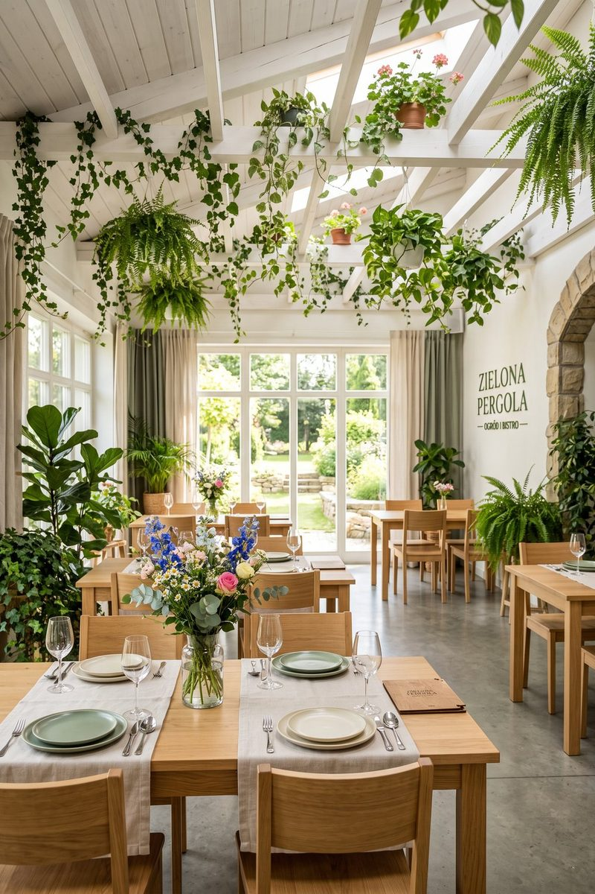
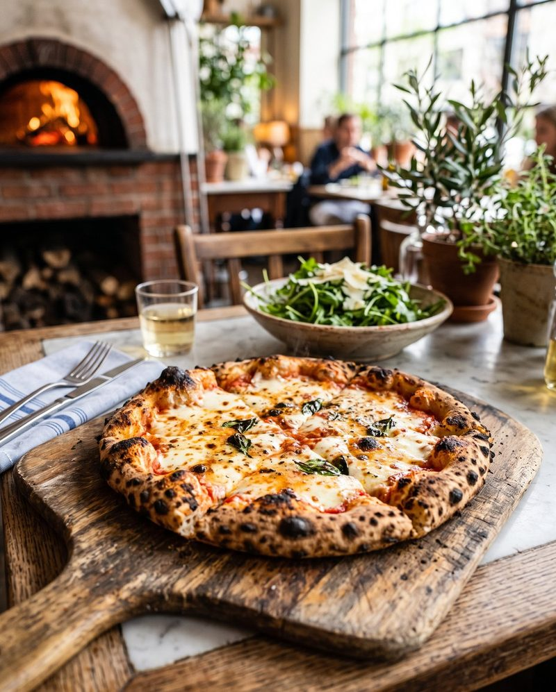
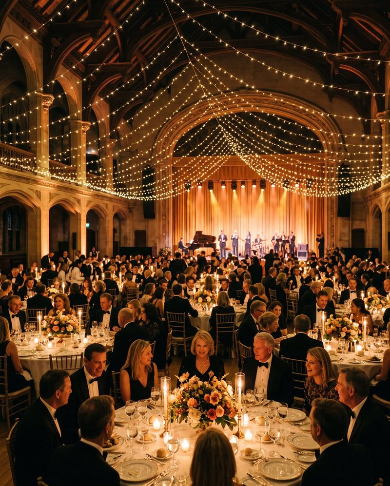

This week's lunch
Every day from Monday to Friday we prepare a fresh lunch set.
See this week's menu
Sample demo website (portfolio) — built with AI. Brand, data, copy and photos are fictional.
Restaurant · Pizza · Catering — Zielony Gaj
A restaurant, pizza and events crafted with care.
Every day: lunch, pizza and burgers — to eat in or take away.
Today
Every day from Monday to Friday we prepare a fresh lunch set.
See this week's menu

A wedding, first communion, company gathering, conference or family celebration.
Ask about a dateOur restaurant and catering studio are based in Zielony Gaj near Lipów — just a few minutes from Lipów-Zielony Gaj airport, the business zone and the business park.
To begin
01 · Restaurant
Every day: lunch, pizza and burgers — to eat in or take away.
A green, light-filled interior brimming with flowers and daylight. A place for an unhurried lunch, a meal shared around the table and a moment of green-pergola calm in the middle of the week.


02 · Pizza
To eat in or take away — phone orders: 795 870 359.


03 · Catering
Family and corporate events: from intimate dinners to larger receptions. Tell us about your occasion — we'll put together a proposal.


04 · Portfolio

05 · Behind the scenes
Zielona Pergola is a showcase website built with AI — from the wireframe, through the copy, to a complete set of photorealistic images generated precisely for the project's frames. Drag the slider to see the difference between a dimensional placeholder and the final image.



06 · Contact
Phone: 795 870 359 · kontakt@zielonapergola.pl (demo address)
The restaurant is open daily: Mon–Fri 8:00–21:00, Sat 11:00–22:00, Sun 11:00–20:00.
Tell us what the occasion is — we'll get back to you. You'll find all the details and a map on the Contact page.